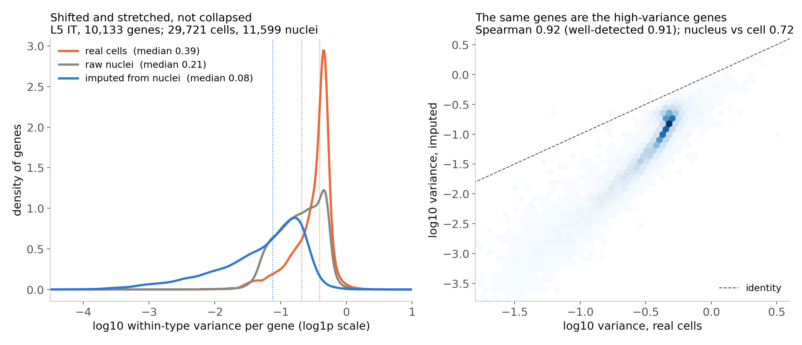
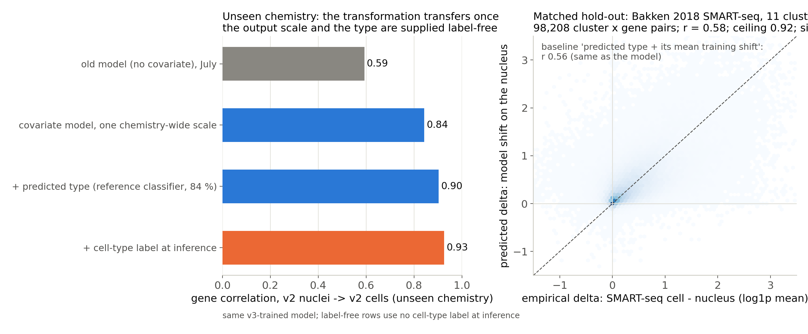

CBB RIP talk: two new results, deck review, storyline
Review of cbb-rip-talk-10-28-2026.pptx (23 slides) against the recorded results, 2026-10-28. Figures are generated from the result tables, not recomputed. Script: notes/presentation/CBB_RIP_2026-11/make_new_result_figures.py; PNGs in figures/.
1. New result A: similarity to external RiboTag / TRAP profiles
Present it as three beats on two slides: one intro slide that says what the assay measures and what the comparison is, one result slide with the figure and the conclusion. It sits as tier 3 of your "biological validity" roadmap (slide 15), after SynGO and JASPAR, and it answers the committee's request (William's TRAP suggestion) directly.
Slide A1, intro: "Tier 3: an orthogonal assay. Ribosome-bound RNA from genetically defined populations"
- What TRAP / RiboTag measures. A tagged ribosomal protein is expressed in one cell type inside intact tissue; tagged ribosomes are pulled down and the bound mRNA sequenced. No dissociation, no nucleus-versus-cell split. Ribosome-bound mRNA is cytoplasmic by definition.
- Why it is a fair reference. It never entered training, it is population-level (so it tests the cell-type-level claim, not per-cell), and it comes from other labs and other cortical regions.
- The comparison. For each external population, map it to a training cell type, and compute the Spearman correlation of three per-type pseudobulk profiles with the external profile: raw nuclei, nuclei imputed by the model, real whole cells. Real cells set the ceiling an imputation could reach. 7,700 to 8,700 genes per comparison; gene and replicate bootstraps.
- Data. 17 populations, 9 sequencing datasets from at least 6 labs: pan-excitatory, L5a and three L5b lines (two from motor cortex), Pvalb, Sst, Vip, Htr3a interneurons, astrocytes, oligodendrocytes. The 2008 microarray atlas is retired to a footnote.

validation/trap_ribotag_external_validation/outputs/extension/figures/figE2_H2_all_datasets_data.csv, post L5-mapping audit (Scnn1a L4 and Rbp4 pan-L5 excluded, 2026-09-24/25). Report: outputs/report/extension_newer_datasets.md.Slide A2, result: "Imputation closes the nucleus-to-cell gap to external ribosome-bound profiles in every population"
Result. Raw nuclei correlate 0.23 to 0.50 with the external profile; imputed nuclei 0.40 to 0.78; real cells 0.37 to 0.78. Median gap closed 0.99 (range 0.96 to 1.20); every gene-bootstrap and replicate-bootstrap interval excludes zero. The same holds for Pvalb and Sst in two independent RiboTag studies (0.43 to 0.73 with a ceiling of 0.74).
Conclusion to say aloud. The learned nucleus-to-cell shift is concordant with an independent measurement of cytoplasmic, translated RNA, for excitatory neurons, interneurons and glia. Glia sit lower because the reference itself is lower (small nuclear reference, known neuronal contamination of glial RiboTag), not because imputation fails there.
Two caveats, one sentence each. Ribosome-bound RNA measures translation, not steady-state cytoplasmic abundance, so this supports direction and rank, not absolute levels. And at pseudobulk level every method ties: CT-mean, linear regression, scVI, scANVI, scGen, scButterfly land within 0.03 of ImputeVAE (table below), so this validates the compartment shift itself, not the model over baselines. Say that yourself; it sets up the benchmark slide.
| Class mean Spearman with external profile | raw nuclei | ImputeVAE | CT-mean | linear reg. | scVI | scANVI | scGen | scButterfly |
|---|---|---|---|---|---|---|---|---|
| excitatory (5) | 0.39 | 0.706 | 0.697 | 0.675 | 0.679 | 0.683 | 0.688 | 0.686 |
| inhibitory (9) | 0.41 | 0.689 | 0.693 | 0.680 | 0.679 | 0.681 | 0.683 | 0.686 |
| glia (3) | 0.33 | 0.493 | 0.471 | 0.553 | 0.480 | 0.493 | 0.468 | 0.431 |
2. New result B: within-type variance distribution for L5 IT
This answers Prashant's September question ("is the low variance uniform flattening, or a scale change that keeps the same genes variable?"). Present it as the second beat of the variance story: the limitation slide first (variance ratio 0.15), then this figure, then the latent finding that explains the shape.
Slide B1, intro (can be the bottom of the limitation slide): "Is the lost variance a collapse or a scale change?"
- The concern. Within a cell type, imputed profiles carry 15 % of the real-cell variance. A model that assigns nearly the same value to every cell would show this too ("cheating": every gene ends up with the same low variance).
- The test. Per cell type and gene, the within-type variance in real cells, raw nuclei and imputed cells (log1p scale, genes detected in more than 1 % of cells). Two readouts: the distribution of per-gene variances, and the Spearman rank correlation of a gene's variance in real cells against its variance in imputed cells. Reference: the same correlation between real cells and raw nuclei.
- Prediction. Uniform flattening gives a narrow imputed distribution and a slope near zero. A scale change keeps the ranks and the shape.

notes/experiments/variance_zero_nonzero_fullmodel/variance_rank/figures/V1_focus_distribution_and_rank_data.csv; README in the same folder.Slide B2, result: "The ranks are kept and the distribution is stretched: a scale change, not a collapse"
Result. Medians: real cells 0.39, raw nuclei 0.21, imputed 0.08. Spearman of per-gene variance, real versus imputed: 0.92 (0.91 on well-detected genes), above the real-versus-nucleus reference of 0.72, and 0.80 when the real-cell target has Poisson and library-size variance removed. The imputed distribution is wider on the log scale (fitted slope 2.1): low-variance genes are compressed most (ratio 0.02 for genes detected in under 10 % of cells, 0.35 above 70 %). Same picture in Oligo (0.93) and in 14 of 17 types.
Conclusion to say aloud. The same genes are the high-variance genes; imputation lowers the scale, most for sparse genes, but does not flatten. So the variance loss is not an artefact of assigning one value to everyone. The structure of what remains is the real problem, and that is the next slide: the retained variance is almost one axis, library size.
Caveat for questions. Variance tracks mean on the log1p scale, so part of the rank agreement is inherited from mean agreement; after regressing out the mean the residual Spearman is 0.55 in L5 IT. And for the best-detected genes (above 70 %), which carry most biology, the within-bin correlation is only 0.47.
2b. Figures for the other two placeholder slides

variance_zero_nonzero_fullmodel/latent_usage/per_dimension.csv, F9 values, libsize review §6.7.
delta_reliability_exon_intron.json. v2 numbers from libsize review §6.4a.3. Deck review, slide by slide
The draft is 23 slides and about 11 of them are background or method description. For 20 minutes with peers, background should be 4 to 5 slides and the results about 10. The bigger issue is that the second half is still the August follow-up deck: an "Aim 1" validation plan, a results recap with superseded claims, and a future-plan summary whose Aim 2 and Aim 3 were changed in October.
| # | Slide | Verdict | Why / what to do |
|---|---|---|---|
| 1 | Title | keep | Replace the notes: they are the August follow-up script (jury duty, future plan). Open with the question in the title. |
| 2 | snRNA-seq dominates | keep | Good opener. Fold the "unlock 2.8M nuclei" message from slide 11 into the notes here. |
| 3 | A nucleus isn't a smaller cell | keep | The three properties are the setup for everything later. |
| 4 | RNA localization (Malat1, Camk2a) | keep | Best background slide. Point at Malat1/Neat1 and say "these are the genes the model must send down"; it pays off on the lncRNA and COMPARTMENTS checks. |
| 5 | Gap varies by cell type | cut | Repeats the third bullet of slide 3. One sentence on slide 3 covers it. |
| 6 | Pseudobulk / DESeq2 | cut (backup) | Peers know DESeq2; the limitation list is all that matters and it belongs in one line on the batch-correction slide. |
| 7 | Batch correction: assumptions | merge into 8 | Keep the three assumptions as the left column of slide 8. |
| 8 | Batch correction: limitations | keep (one slide) | This is the "why not scVI" slide. The scVI over-correction line is a good concrete hook. |
| 9, 10 | scGen, scButterfly | cut (backup) | Directed-transformation methods are best introduced as rows of the benchmark table, not two architecture slides. Keep one sentence: "scGen and scButterfly learn a map; so do we; here is how we differ." |
| 11 | Tasks | cut | Carries stale all-data numbers (96.3 %, 77.5 %, GO p-values). The three tasks are fine as spoken framing on slide 2 and return on the open-question slide. |
| 12, 13 | Method | keep | Keep 12; 13 is the right half of 12 and can be a click. Add two words to the caption: single-stage training, library-size covariate, no labels at inference. |
| 14 | Results recap (A/B/C) | replace | Panel A's claim "better than most baselines" is the all-data comparison; the split-aware benchmark says label-free best, label-using at the ceiling. Replace with the benchmark ladder slide. Panel B (shift agreement) is slide 16/19's content. Panel C (variance compressed) moves to the variance section as the limitation slide. |
| 15 | Validation roadmap (3 tiers) | keep, retitle | Good structure. Drop "Aim 1"; name the tiers: internal fidelity, annotation-based plausibility, orthogonal assay. Tier 3 is now done (TRAP), so the slide is a map of results, not a plan. |
| 16 | Validity 1: internal shift fidelity | merge into 19 | The table says "strongly concordant" without a number. Slide 19 already has the numbers; show the scatter once with the per-type panel. |
| 17, 18 | SynGO and JASPAR descriptions | merge into one | Two columns: SynGO = positive set, JASPAR TFs = contrast set, each with its hypothesis. One slide, 60 seconds. |
| 19 | SynGO slope | keep | Main tier-2 result. |
| 20 | SynGO subgroups | cut if short | Supporting detail; mention in the notes of 19. |
| 21 | SynGO vs TF | keep | The specificity point. Add one line on the nuclear lncRNA list (45 genes, all negative) so the restraint direction is shown too. |
| new | TRAP/RiboTag intro + result (A1, A2) | insert after 21 | Tier 3 of the roadmap. |
| new | Benchmark ladder | insert after the method | Ceiling 0.981 (CT-mean), scGen 0.975, ImputeVAE predicted-type 0.962, no labels anywhere 0.921, no-covariate 0.900, scVI/scANVI label-free 0.86. Split-aware test numbers only. |
| new | Variance: limitation, L5 IT (B1, B2), latent finding | insert after TRAP | Three slides: the 0.15 ratio, the rank/stretch figure, then "the retained variance is one library-size axis; 2 to 4 identity dims; covariate model". This is where the talk becomes yours, not a validation list. |
| new | Generalisation (v2 chemistry, Bakken hold-out) | insert, one slide | Show the ceiling and the "predicted type + mean shift" baseline on the same axis. Human M1 (from the follow-up deck) fits here as a second panel if time allows. |
| 22 | Future plan summary (Aims 1-3) | replace | Aim 2 (variance losses) was dropped on 2026-10-23 and Aim 3's EGA bulk route was replaced by the SCORCH nuclei-only set. Replace with the open-question slide: which nuclei-only result changes after imputation, three candidates, ask the room. |
| 23 | Thank you | keep | Put 6, 7, 9, 10 after it as backups. |
Resulting order (19 main slides). 1 title; 2, 3, 4 background; 8 why not batch correction; 12 method; benchmark ladder; 15 validation roadmap; 17+18 datasets; 19 shift fidelity; 21 SynGO vs TF (+ lncRNA line); A1, A2 TRAP; variance limitation (panel C of 14); B2 L5 IT variance; latent finding; generalisation; open question; thank you; backups 6, 7, 9, 10, 20.
4. Storyline
The draft still tells the August story: "here is a model, here is my validation plan in three aims, here is the future plan." For a research-in-progress talk the stronger story is the one your title already states, and it has four moves:
- The gap is biology, not noise (slides 2 to 4, then 8 as the contrast). The nucleus holds a structured, gene-specific, cell-type-dependent subset of the cell's RNA.
- We learned that map and checked it against things we never trained on (method, validation roadmap, SynGO/TF, TRAP). Direction and rank are right; cell-type specificity is right; an orthogonal assay agrees.
- What the instrument is and is not (benchmark, variance, latent finding). Best label-free translator; with labels a type mean is the ceiling; the variance "loss" is a scale change on a single library-size axis; at 10x depth a nucleus determines its type-level cytoplasm plus its RNA content, not its individual cytoplasm. Present this as the finding of the summer, not as a limitation you are apologising for.
- Therefore the contribution is the applied map, and the open question is where it changes a result (generalisation, then the ask).
Three things to change in how you say it. First, retire "better than most baselines" and "population-level recovery"; say "best label-free, ceiling with labels" and own it before the audience does. Second, when you show TRAP, say in the same breath that a cell-type mean would score the same there; it makes the benchmark slide land as the honest answer rather than a retreat. Third, drop the "Aim" vocabulary throughout; it signals a proposal, and this is a progress talk whose aims have already moved.
Two numbers to keep out of the talk. The all-data scVI gene correlation of 0.386 (superseded by 0.86) and the 96.3 % classification figure on slide 11. Both are from the comparison that CLAUDE.md says not to quote.